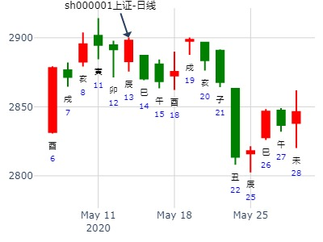

旅游行业。离之旅，测热点：中海 科技，长方照明。
长方照明。
冲则应，填则实，最喜动空。
人以为空则无功，殊不知动而空者，占晴占雨若非冲空之日，定应填实之朝。
例182、
未月丙午日，占何日雨？得离之旅。
兄弟巳火′世
子孙未土″
妻财酉金′
官鬼亥水′应
子孙丑土″
父母卯木′ 动 子孙辰土
断曰：卯木父动临于旬空，己酉日若不雨，乙卯日必雨。
例183、
或曰：如何定在两日？
余曰：不难，再占一卦。
又得离卦。
兄弟巳火′世
子孙未土″
妻财酉金′
官鬼亥水′应
子孙丑土″
父母卯木′
余曰：此卦还以前卦相同。
又占一卦，得艮之谦卦。
官鬼寅木′世 动 子孙酉金
妻财子水″
兄弟戌土″
子孙申金′应
父母午火″
兄弟辰土″
断曰：甲寅日阴云，乙卯日必雨，辰日而又晴矣。
彼曰：何以知之？
余曰：此卦又是寅木鬼动值旬空，出空之日，必定天变。
前卦卯木父变辰土子孙，故知卯日必雨辰日必晴。
果于寅日密云，卯日大雨，辰日大晴。所以动则不为空矣。
（注：此处不论鬼化绝，只论官鬼发动必定变天）
光大证券春节前走势
公历起卦时间：2016年1月21日11时19分 (在线摇卦)
干支：乙未年 己丑月 壬寅日 丙午时 （日空：辰巳）
离宫：离为火 (六冲) 离宫：火山旅
六神 伏神 本 卦 变 卦
白虎 兄弟己巳火 ▅▅▅▅▅ 世 兄弟己巳火 ▅▅▅▅▅
腾蛇 子孙己未土 ▅▅ ▅▅ 子孙己未土 ▅▅ ▅▅
勾陈 妻财己酉金 ▅▅▅▅▅ 妻财己酉金 ▅▅▅▅▅ 应
朱雀 官鬼己亥水 ▅▅▅▅▅ 应 妻财丙申金 ▅▅▅▅▅
青龙 子孙己丑土 ▅▅ ▅▅ 兄弟丙午火 ▅▅ ▅▅
玄武 父母己卯木 ▅▅▅▅▅ ○→ 子孙丙辰土 ▅▅ ▅▅ 世
马后炮：勉强解释，天气章，先跌后涨。卯日算开跌起点，到戌日辰被冲实则涨。
占事：512880证券ETF未来二周
时间: 2019-01-04 13时47分
干支: 戊戌年甲子月辛丑日 (旬空: 辰巳 )
离为火 火山旅
六神 伏神 本 卦 变 卦
腾蛇 ▅▅▅▅▅ 兄弟巳火 世 ▅▅▅▅▅ 兄弟巳火
勾陈 ▅▅ ▅▅ 子孙未土 ▅▅ ▅▅ 子孙未土
朱雀 ▅▅▅▅▅ 妻财酉金 ▅▅▅▅▅ 妻财酉金 应
青龙 ▅▅▅▅▅ 官鬼亥水 应 ▅▅▅▅▅ 妻财申金
玄武 ▅▅ ▅▅ 子孙丑土 ▅▅ ▅▅ 兄弟午火
白虎 ▅▅▅▅▅ 父母卯木 Ｏ→ ▅▅ ▅▅ 子孙辰土 世
利贞，亨。 畜牝牛，吉。
初九：履错然，敬之无咎。
马后炮：爻辞几乎说了算，横住基本不动。
主帖标题: 易测杂谈（五）——探索需要“固执”
木 发表于 2020-1-5 14:04
我劝T兄，别在日卦测股方面投入太多了。
一句不太好听的，很可能是竹篮子打水一场空。
时间卦：
公历起卦时间：2020年1月5日14时8分 (按农历时间起卦)
干支：己亥年 丙子月 丁未日 丁未时 （日空：寅卯）
神煞：驿马－巳 桃花－子 日禄－午 贵人－酉，亥
离宫：离为火 (六冲) 离宫：火山旅
六神 伏神 本 卦 变 卦
青龙 兄弟己巳火 ▅▅▅▅▅ 世 兄弟己巳火 ▅▅▅▅▅
玄武 子孙己未土 ▅▅ ▅▅ 子孙己未土 ▅▅ ▅▅
白虎 妻财己酉金 ▅▅▅▅▅ 妻财己酉金 ▅▅▅▅▅ 应
腾蛇 官鬼己亥水 ▅▅▅▅▅ 应 妻财丙申金 ▅▅▅▅▅
勾陈 子孙己丑土 ▅▅ ▅▅ 兄弟丙午火 ▅▅ ▅▅
朱雀 父母己卯木 ▅▅▅▅▅ ○→ 子孙丙辰土 ▅▅ ▅▅ 世
初九：履错然，敬之无咎。象曰：履错之敬，以辟咎也。
占事：2021年辛丑年上证指数走势如何？以财为当前指数。--by 天同
时间: 2021-02-04 3时18分
干支: 辛丑年庚寅月癸未日甲寅时 (旬空: 申酉 )
离为火 火山旅
六神 伏神 本 卦 变 卦
白虎 ▅▅▅▅▅ 兄弟巳火 世 ▅▅▅▅▅ 兄弟巳火
腾蛇 ▅▅ ▅▅ 子孙未土 ▅▅ ▅▅ 子孙未土
勾陈 ▅▅▅▅▅ 妻财酉金 ▅▅▅▅▅ 妻财酉金 应
朱雀 ▅▅▅▅▅ 官鬼亥水 应 ▅▅▅▅▅ 妻财申金
青龙 ▅▅ ▅▅ 子孙丑土 ▅▅ ▅▅ 兄弟午火
玄武 ▅▅▅▅▅ 父母卯木 Ｏ→ ▅▅ ▅▅ 子孙辰土 世
利贞，亨。 畜牝牛，吉。
初九：履错然，敬之无咎。
主帖标题: 2021年2月22---26日上证指数擂台赛-D方(周测）
公历起卦时间：2021年2月19日14时6分 (手工指定)
干支：辛丑年 庚寅月 戊戌日 己未时 （日空：辰巳）
离宫：离为火 (六冲) 离宫：火山旅
六神 伏神 本 卦 变 卦
朱雀 兄弟己巳火 ▅▅▅▅▅ 世 兄弟己巳火 ▅▅▅▅▅
青龙 子孙己未土 ▅▅ ▅▅ 子孙己未土 ▅▅ ▅▅
玄武 妻财己酉金 ▅▅▅▅▅ 妻财己酉金 ▅▅▅▅▅ 应
白虎 官鬼己亥水 ▅▅▅▅▅ 应 妻财丙申金 ▅▅▅▅▅
螣蛇 子孙己丑土 ▅▅ ▅▅ 兄弟丙午火 ▅▅ ▅▅
勾陈 父母己卯木 ▅▅▅▅▅ ○→ 子孙丙辰土 ▅▅ ▅▅ 世

主帖标题: 某股下周一走势
公历起卦时间：2021年2月19日13时10分 (按农历时间起卦)
干支：辛丑年 庚寅月 戊戌日 己未时 （日空：辰巳）
离宫：离为火 (六冲) 离宫：火山旅
六神 伏神 本 卦 变 卦
朱雀 兄弟己巳火 ▅▅▅▅▅ 世 兄弟己巳火 ▅▅▅▅▅
青龙 子孙己未土 ▅▅ ▅▅ 子孙己未土 ▅▅ ▅▅
玄武 妻财己酉金 ▅▅▅▅▅ 妻财己酉金 ▅▅▅▅▅ 应
白虎 官鬼己亥水 ▅▅▅▅▅ 应 妻财丙申金 ▅▅▅▅▅
螣蛇 子孙己丑土 ▅▅ ▅▅ 兄弟丙午火 ▅▅ ▅▅
勾陈 父母己卯木 ▅▅▅▅▅ ○→ 子孙丙辰土 ▅▅ ▅▅ 世
今天该股涨，下周一丑日，继续涨。
父母化空。
试测驰宏锌诸2.22辛丑一-2.24癸卯三哪日顶？
出生：2021 年 性别：男 占事：没填
公历起卦时间：2021年2月22日17时6分 (电脑自动)
干支：辛丑年 庚寅月 辛丑日 丁酉时 （日空：辰巳）
神煞：驿马－亥 桃花－午 日禄－酉 贵人－寅，午
离宫：离为火 (六冲) 离宫：火山旅
六神 伏神 本 卦 变 卦
螣蛇 兄弟己巳火 ▅▅▅▅▅ 世 兄弟己巳火 ▅▅▅▅▅
勾陈 子孙己未土 ▅▅ ▅▅ 子孙己未土 ▅▅ ▅▅
朱雀 妻财己酉金 ▅▅▅▅▅ 妻财己酉金 ▅▅▅▅▅ 应
青龙 官鬼己亥水 ▅▅▅▅▅ 应 妻财丙申金 ▅▅▅▅▅
玄武 子孙己丑土 ▅▅ ▅▅ 兄弟丙午火 ▅▅ ▅▅
白虎 父母己卯木 ▅▅▅▅▅ ○→ 子孙丙辰土 ▅▅ ▅▅ 世

主帖标题: 2021年3月1---5日上证指数擂台赛-D方(周测）
公历起卦时间：2021年2月26日14时39分 (手工指定)
干支：辛丑年 庚寅月 乙巳日 癸未时 （日空：寅卯）
神煞：驿马－亥 桃花－午 日禄－卯 贵人－子，申
离宫：离为火 (六冲) 离宫：火山旅
六神 伏神 本 卦 变 卦
玄武 兄弟己巳火 ▅▅▅▅▅ 世 兄弟己巳火 ▅▅▅▅▅
白虎 子孙己未土 ▅▅ ▅▅ 子孙己未土 ▅▅ ▅▅
螣蛇 妻财己酉金 ▅▅▅▅▅ 妻财己酉金 ▅▅▅▅▅ 应
勾陈 官鬼己亥水 ▅▅▅▅▅ 应 妻财丙申金 ▅▅▅▅▅
朱雀 子孙己丑土 ▅▅ ▅▅ 兄弟丙午火 ▅▅ ▅▅
青龙 父母己卯木 ▅▅▅▅▅ ○→ 子孙丙辰土 ▅▅ ▅▅ 世
戌日卯戌合利好，又墓兄弟，涨。亥日世爻暗动，跌。
酉日本该大涨，奈何卯木旬空，被冲实。跌。
卯日财爻春天日破，跌。
主帖标题: 上证大盘测试局17...
公历：2016年03月30日09时04分 星期三
节气：惊蜇：03月05日11时43分 春分：03月20日12时30分
真时：2016年03月30日09时04分 北京 天安门(东经116.38度)
农历：丙申年 二月小 廿二日 隅中时分 巳时
干支：丙申 辛卯 辛亥 癸巳 报数起局阳七局
旬空：辰巳 午未 寅卯 午未 旬首：甲申
值符天英在三宫 值使景门在九宫 超级奇门排宫法
┌─────────┬─────────┬─────────┐
│戊 螣蛇 │癸 太阴○ │丙 六合○ │
│ 天芮 壬 禽丙│ 天柱 戊 │ 天心 乙 │
│ 杜门 丁 │ 景门 庚 │ 死门 壬 禽丙│
│九天 │值符 │螣蛇 │
├─────────┼─────────┼─────────┤
│乙 值符 │己 │辛 白虎 │
│ 天英 庚 │ │ 天蓬 辛 │
│ 伤门 癸 │ 丙│ 惊门 戊 │
│九地 │ │太阴 │
├─────────┼─────────┼─────────┤
│壬 九天 │丁 九地 │庚 玄武 马│
│ 天辅 丁 │ 天冲 癸 │ 天任 己 │
│ 生门 己 │ 休门 辛 │ 开门 乙 │
│玄武 │白虎 │六合 │
└─────────┴─────────┴─────────┘
干支： 丙申年 辛卯月 辛亥日 癸巳时 (卦身：巳)
主变卦 离为火(离宫) 之 火山旅(离宫) [空亡:寅、卯]
螣蛇 ━━━ 兄弟己巳火 世 ━━━ 兄弟己巳火
勾陈 ━ ━ 子孙己未土 ━ ━ 子孙己未土
朱雀 ━━━ 妻财己酉金 ━━━ 妻财己酉金 应
青龙 ━━━ 官鬼己亥水 应 ━━━ 妻财丙申金
玄武 ━ ━ 子孙己丑土 ━ ━ 兄弟丙午火
白虎 ━━━○父母己卯木 ━ ━ 子孙丙辰土 世
占事：德美化工五月如何走？ 幸福的伟兄
公历起卦时间：2019年4月24日21时52分 (电脑自动)
干支：己亥年 戊辰月 辛卯日 己亥时 （日空：午未）
离宫：离为火 (六冲) 离宫：火山旅
六神 伏神 本 卦 变 卦
腾蛇 兄弟己巳火 ▅▅▅▅▅ 世 兄弟己巳火 ▅▅▅▅▅
勾陈 子孙己未土 ▅▅ ▅▅ 子孙己未土 ▅▅ ▅▅
朱雀 妻财己酉金 ▅▅▅▅▅ 妻财己酉金 ▅▅▅▅▅ 应
青龙 官鬼己亥水 ▅▅▅▅▅ 应 妻财丙申金 ▅▅▅▅▅
玄武 子孙己丑土 ▅▅ ▅▅ 兄弟丙午火 ▅▅ ▅▅
白虎 父母己卯木 ▅▅▅▅▅ ○→ 子孙丙辰土 ▅▅ ▅▅ 世
马后炮：5月开始卯日开始转化，辰日大涨。巳午兄弟值日跌。
短线先涨后跌，不在问题主题5月里。
主帖标题: 测5月22日大盘走势
5月22日看涨，涨幅40点左右（1％左右）
2007-05-21
年建：丁亥 月建：乙巳 日建：乙卯 时建：甲申 旬空：子丑
离宫：离为火（六冲） 离宫：火山旅（六合）
玄武 ▅▅▅▅▅ 世 兄弟己巳火 己巳火兄弟 ▅▅▅▅▅
白虎 ▅▅ ▅▅ 子孙己未土 己未土子孙 ▅▅ ▅▅
滕蛇 ▅▅▅▅▅ 妻财己酉金 己酉金妻财 应 ▅▅▅▅▅
勾陈 ▅▅▅▅▅ 应 官鬼己亥水 丙申金妻财 ▅▅▅▅▅
朱雀 ▅▅ ▅▅ 子孙己丑土 丙午火兄弟 ▅▅ ▅▅
青龙 ▅▅▅▅▅ 父母己卯木 → 丙辰土子孙 世 ▅▅ ▅▅
主帖标题: 弱父母带旺子孙动生，大涨，，，值得学习
时间: 2020-05-13
干支: 庚子年辛巳月丙辰日 (旬空: 子丑 )
离宫：离为火（六冲） 离宫：火山旅
六神 【本 卦】 【变 卦】
青龙 ▄▄▄▄▄ 兄弟己巳火 世 ▄▄▄▄▄ 兄弟己巳火
玄武 ▄▄ ▄▄ 子孙己未土 ▄▄ ▄▄ 子孙己未土
白虎 ▄▄▄▄▄ 妻财己酉金 ▄▄▄▄▄ 妻财己酉金 应
螣蛇 ▄▄▄▄▄ 官鬼己亥水 应 ▄▄▄▄▄ 妻财丙申金
勾陈 ▄▄ ▄▄ 子孙己丑土 ▄▄ ▄▄ 兄弟丙午火
朱雀 ▄▄▄▄▄ 父母己卯木 ○ ▄▄ ▄▄ 子孙丙辰土 世

戌日墓兄弟生金，涨。
亥子日冲兄弟旺动，跌。丑日虽然冲了未土暗动，但是又墓了弱财，大跌。
5.31上证收盘走势？
出生：2022 年 性别：男 占事：没填
公历起卦时间：2022年5月30日20时58分 (电脑自动)
干支：壬寅年 乙巳月 癸未日 壬戌时 （日空：申酉）
神煞：驿马－巳 桃花－子 日禄－子 贵人－卯，巳
离宫：离为火 (六冲) 离宫：火山旅
六神 伏神 本 卦 变 卦
白虎 兄弟己巳火 ▅▅▅▅▅ 世 兄弟己巳火 ▅▅▅▅▅
螣蛇 子孙己未土 ▅▅ ▅▅ 子孙己未土 ▅▅ ▅▅
勾陈 妻财己酉金 ▅▅▅▅▅ 妻财己酉金 ▅▅▅▅▅ 应
朱雀 官鬼己亥水 ▅▅▅▅▅ 应 妻财丙申金 ▅▅▅▅▅
青龙 子孙己丑土 ▅▅ ▅▅ 兄弟丙午火 ▅▅ ▅▅
玄武 父母己卯木 ▅▅▅▅▅ ○→ 子孙丙辰土 ▅▅ ▅▅ 世

主帖标题: 用河洛理数起卦推算上证大盘走势
占事: 今日股市
起卦方式：手动摇卦
公历时间：2009年6月12日8时54分
干支：己丑年 庚午月 戊子日 丙辰时
旬空：午未 戌亥 午未 子丑
神煞：驿马─寅 桃花─酉 日禄─巳 贵人─丑，未
离宫：离为火（六冲） 离宫：火山旅
六神 【本 卦】 【变 卦】
朱雀 ▄▄▄▄▄ 兄弟己巳火 世 ▄▄▄▄▄ 兄弟己巳火
青龙 ▄▄ ▄▄ 子孙己未土 ▄▄ ▄▄ 子孙己未土
玄武 ▄▄▄▄▄ 妻财己酉金 ▄▄▄▄▄ 妻财己酉金 应
白虎 ▄▄▄▄▄ 官鬼己亥水 应 ▄▄▄▄▄ 妻财丙申金
螣蛇 ▄▄ ▄▄ 子孙己丑土 ▄▄ ▄▄ 兄弟丙午火
勾陈 ▄▄▄▄▄ 父母己卯木 O-> ▄▄ ▄▄ 子孙丙辰土 世
开2794,兄持世,主力作空,官变财利空,父化子利空.变卦兄暗动克财,唯六冲变六合变卦子孙持世利好.总断跌
子日冲动潜在的午火暗动，跌。卯日直接开始转化为辰子孙。
占事：2014年6月大盘走势 --离之旅
公历时间：2014年6月3日3时16分
干 支：甲午年 己巳月 乙巳日 戊寅时
旬 空：辰巳 戌亥 (寅卯) 申酉
离宫：离为火（六冲） 离宫：火山旅
六神 【本 卦】 【变 卦】
玄武 ▄▄▄▄▄ 兄弟己巳火 世 ▄▄▄▄▄ 兄弟己巳火
白虎 ▄▄ ▄▄ 子孙己未土 ▄▄ ▄▄ 子孙己未土
螣蛇 ▄▄▄▄▄ 妻财己酉金 ▄▄▄▄▄ 妻财己酉金 应
勾陈 ▄▄▄▄▄ 官鬼己亥水 应 ▄▄▄▄▄ 妻财丙申金
朱雀 ▄▄ ▄▄ 子孙己丑土 ▄▄ ▄▄ 兄弟丙午火
青龙 ▄▄▄▄▄ 父母己卯木 O-> ▄▄ ▄▄ 子孙丙辰土 世
初九：履错然，敬之无咎。
象曰：履错之敬，以辟咎也。
占事：6月15日沪市涨跌？
公历：2016年6月14日20时34分，星期二。
神煞：驿马-巳 桃花-子 干禄-午 贵人-亥、酉
干支：丙申年 甲午月 丁卯日 庚戌时 (卦身：亥)
主变卦 离为火(离宫) 之 火山旅(离宫) [空亡:戌、亥]
青龙 ▅▅▅▅▅ 兄弟己巳火 世 ▅▅▅▅▅ 兄弟己巳火
玄武 ▅▅ ▅▅ 子孙己未土 ▅▅ ▅▅ 子孙己未土
白虎 ▅▅▅▅▅ 妻财己酉金 ▅▅▅▅▅ 妻财己酉金 应
螣蛇 ▅▅▅▅▅ 官鬼己亥水 应 ▅▅▅▅▅ 妻财丙申金
勾陈 ▅▅ ▅▅ 子孙己丑土 ▅▅ ▅▅ 兄弟丙午火
朱雀 ▅▅▅▅▅○父母己卯木 ▅▅ ▅▅ 子孙丙辰土 世
出生：2022 年 性别：男 占事：上证6.22收盘走势
排卦：元亨利贞网六爻在线排盘系统 https://www.china95.net
公历起卦时间：2022年6月22日8时32分 (电脑自动)
干支：壬寅年 丙午月 丙午日 壬辰时 （日空：寅卯）
离宫：离为火 (六冲) 离宫：火山旅
六神 伏神 本 卦 变 卦
青龙 兄弟己巳火 ▅▅▅▅▅ 世 兄弟己巳火 ▅▅▅▅▅
玄武 子孙己未土 ▅▅ ▅▅ 子孙己未土 ▅▅ ▅▅
白虎 妻财己酉金 ▅▅▅▅▅ 妻财己酉金 ▅▅▅▅▅ 应
螣蛇 官鬼己亥水 ▅▅▅▅▅ 应 妻财丙申金 ▅▅▅▅▅
勾陈 子孙己丑土 ▅▅ ▅▅ 兄弟丙午火 ▅▅ ▅▅
朱雀 父母己卯木 ▅▅▅▅▅ ○→ 子孙丙辰土 ▅▅ ▅▅ 世
主帖标题: 测上证辛卯年未月8.5日能站上2750点？7.29
姓名：1 男 占事:测上证辛卯年未月8.5日
起卦方式：手动摇卦 中国周易研究会
公历时间：2011年7月29日7时15分
干 支：辛卯年 乙未月 乙酉日 庚辰时
旬 空：午未 辰巳 午未 申酉
离宫：离为火（六冲） 离宫：火山旅
六神 【本 卦】 【变 卦】
玄武 ▄▄▄▄▄ 兄弟己巳火 世 ▄▄▄▄▄ 兄弟己巳火
白虎 ▄▄ ▄▄ 子孙己未土 ▄▄ ▄▄ 子孙己未土
螣蛇 ▄▄▄▄▄ 妻财己酉金 ▄▄▄▄▄ 妻财己酉金 应
勾陈 ▄▄▄▄▄ 官鬼己亥水 应 ▄▄▄▄▄ 妻财丙申金
朱雀 ▄▄ ▄▄ 子孙己丑土 ▄▄ ▄▄ 兄弟丙午火
青龙 ▄▄▄▄▄ 父母己卯木 O-> ▄▄ ▄▄ 子孙丙辰土 世
初九：履错然，敬之无咎。
象曰：履错之敬，以辟咎也。
主帖标题: ！上证指数日内走势预测贴
占事:7.3日
起卦方式：电脑自动
公历时间：2020年7月2日20时3分
干 支：庚子年 壬午月 丙午日 戊戌时
旬 空：辰巳 申酉 寅卯 辰巳
离宫：离为火（六冲） 离宫：火山旅（六合）
六神 【本 卦】 【变 卦】
青龙 ▄▄▄▄▄ 兄弟己巳火 世 ▄▄▄▄▄ 兄弟己巳火
玄武 ▄▄ ▄▄ 子孙己未土 ▄▄ ▄▄ 子孙己未土
白虎 ▄▄▄▄▄ 妻财己酉金 ▄▄▄▄▄ 妻财己酉金 应
螣蛇 ▄▄▄▄▄ 官鬼己亥水 应 ▄▄▄▄▄ 妻财丙申金
勾陈 ▄▄ ▄▄ 子孙己丑土 ▄▄ ▄▄ 兄弟丙午火
朱雀 ▄▄▄▄▄ 父母己卯木 O-> ▄▄ ▄▄ 子孙丙辰土 世
涨
起卦方式：电脑自动 (周易世界 www.zhouyiworld.com)
公历时间：2020年7月2日20时5分 农历时间：庚子年 五月十二日戌时
干 支：庚子年 壬午月 丙午日 戊戌时
旬 空：辰巳 申酉 寅卯 辰巳
神 煞：驿马─申 桃花─卯 日禄─巳 贵人─酉，亥
坎宫：雷火丰 乾宫：火天大有（归魂）
六神 【本 卦】 【变 卦】
青龙 ▄▄ ▄▄ 官鬼庚戌土 X-> ▄▄▄▄▄ 妻财己巳火 应
玄武 ▄▄ ▄▄ 父母庚申金 世 ▄▄ ▄▄ 官鬼己未土
白虎 ▄▄▄▄▄ 妻财庚午火 ▄▄▄▄▄ 父母己酉金
螣蛇 ▄▄▄▄▄ 兄弟己亥水 ▄▄▄▄▄ 官鬼甲辰土 世
勾陈 ▄▄ ▄▄ 官鬼己丑土 应X-> ▄▄▄▄▄ 子孙甲寅木
朱雀 ▄▄▄▄▄ 子孙己卯木 ▄▄▄▄▄ 兄弟甲子水
午月午日，看日月，真的应该到阶段顶了。
段涨吧，日合财。
主帖标题: 300602飞荣达8.16操作卦例
测飞荣达下周走势，是否值得周末买入
公历起卦时间：2019年8月16日14时36分 (按农历时间起卦)
干支：己亥年 壬申月 乙酉日 癸未时 （日空：午未）
神煞：驿马－亥 桃花－午 日禄－卯 贵人－子，申
离宫：离为火 (六冲) 离宫：火山旅
六神 伏神 本 卦 变 卦
玄武 兄弟己巳火 ▅▅▅▅▅ 世 兄弟己巳火 ▅▅▅▅▅
白虎 子孙己未土 ▅▅ ▅▅ 子孙己未土 ▅▅ ▅▅
腾蛇 妻财己酉金 ▅▅▅▅▅ 妻财己酉金 ▅▅▅▅▅ 应
勾陈 官鬼己亥水 ▅▅▅▅▅ 应 妻财丙申金 ▅▅▅▅▅
朱雀 子孙己丑土 ▅▅ ▅▅ 兄弟丙午火 ▅▅ ▅▅
青龙 父母己卯木 ▅▅▅▅▅ ○→ 子孙丙辰土 ▅▅ ▅▅ 世
五行：财临月，合入世爻， 资金持续流入之象。当涨。
实际周五尾市买入，下周二被主力故作弱势吓出局，赚点小钱错过后市涨势。
马后炮：财来合世。亥日又大跌，应是动态旬空巳火被冲实。
主帖标题: 所持股票周一是涨是跌？
出生年：年 性别：男 占事: 周一所持股票是涨是跌？
起卦方式：手动摇卦 周易天地www.64gua.com六爻线上排盘系统
公历时间：2012年9月15日22时50分 农历时间：壬辰年 七月三十日亥时
干支：壬辰年 己酉月 己卯日 乙亥时
旬空：午未 寅卯 申酉 申酉
神煞：驿马─巳 桃花─子 日禄─午 贵人─子，申
离宫：离为火（六冲） 离宫：火山旅
六神 【本 卦】 【变 卦】
勾陈 ▄▄▄▄▄ 兄弟己巳火 世 ▄▄▄▄▄ 兄弟己巳火
朱雀 ▄▄ ▄▄ 子孙己未土 ▄▄ ▄▄ 子孙己未土
青龙 ▄▄▄▄▄ 妻财己酉金 ▄▄▄▄▄ 妻财己酉金 应
玄武 ▄▄▄▄▄ 官鬼己亥水 应 ▄▄▄▄▄ 妻财丙申金
白虎 ▄▄ ▄▄ 子孙己丑土 ▄▄ ▄▄ 兄弟丙午火
螣蛇 ▄▄▄▄▄ 父母己卯木 O-> ▄▄ ▄▄ 子孙丙辰土 世
占事：10月后二周行情？
公历时间：2014年10月17日11时51分
干 支：甲午年 甲戌月 辛酉日 甲午时
旬 空：辰巳 申酉 (子丑) 辰巳
离宫：离为火（六冲） 离宫：火山旅
六神 【本 卦】 【变 卦】
螣蛇 ▄▄▄▄▄ 兄弟己巳火 世 ▄▄▄▄▄ 兄弟己巳火
勾陈 ▄▄ ▄▄ 子孙己未土 ▄▄ ▄▄ 子孙己未土
朱雀 ▄▄▄▄▄ 妻财己酉金 ▄▄▄▄▄ 妻财己酉金 应
青龙 ▄▄▄▄▄ 官鬼己亥水 应 ▄▄▄▄▄ 妻财丙申金
玄武 ▄▄ ▄▄ 子孙己丑土 ▄▄ ▄▄ 兄弟丙午火
白虎 ▄▄▄▄▄ 父母己卯木 O-> ▄▄ ▄▄ 子孙丙辰土
初九：履错然，敬之无咎。
象曰：履错之敬，以辟咎也。

马后炮：
天气章先跌后涨。寅卯开跌，并没有将酉金冲暗动而涨，
主帖标题: 2020年11月2---6日上证指数擂台赛第41场-D方（周测、日测）
replyreload += ',' + 13033716;
公历起卦时间：2020年10月30日14时48分 (手工指定)
干支：庚子年 丙戌月 丙午日 乙未时 （日空：寅卯）
离宫：离为火 (六冲) 离宫：火山旅
六神 伏神 本 卦 变 卦
青龙 兄弟己巳火 ▅▅▅▅▅ 世 兄弟己巳火 ▅▅▅▅▅
玄武 子孙己未土 ▅▅ ▅▅ 子孙己未土 ▅▅ ▅▅
白虎 妻财己酉金 ▅▅▅▅▅ 妻财己酉金 ▅▅▅▅▅ 应
螣蛇 官鬼己亥水 ▅▅▅▅▅ 应 妻财丙申金 ▅▅▅▅▅
勾陈 子孙己丑土 ▅▅ ▅▅ 兄弟丙午火 ▅▅ ▅▅
朱雀 父母己卯木 ▅▅▅▅▅ ○→ 子孙丙辰土 ▅▅ ▅▅ 世
主帖标题: 八卦法选出的经典八股 演示:
出生年：年 性别：男 占事: 明天11日申日,什么股票涨幅大
起卦方式：时间起卦 周易天地www.64gua.com六爻线上排盘系统
公历时间：2009年11月10日14时4分
干支：己丑年 乙亥月 己未日 辛未时
旬空：午未 申酉 子丑 戌亥
神煞：驿马─巳 桃花─子 日禄─午 贵人─子，申
离宫：离为火（六冲） 离宫：火山旅
六神 【本 卦】 【变 卦】
勾陈 ▄▄▄▄▄ 兄弟己巳火 世 ▄▄▄▄▄ 兄弟己巳火
朱雀 ▄▄ ▄▄ 子孙己未土 ▄▄ ▄▄ 子孙己未土
青龙 ▄▄▄▄▄ 妻财己酉金 ▄▄▄▄▄ 妻财己酉金 应
玄武 ▄▄▄▄▄ 官鬼己亥水 应 ▄▄▄▄▄ 妻财丙申金
白虎 ▄▄ ▄▄ 子孙己丑土 ▄▄ ▄▄ 兄弟丙午火
螣蛇 ▄▄▄▄▄ 父母己卯木 O-> ▄▄ ▄▄ 子孙丙辰土 世
易经预测上证走势（2015年12月14日-18日） 乐易
公历时间：2015年12月11日15时19分
干 支：乙未年 戊子月 辛酉日 丙申时
旬 空：辰巳 午未 (子丑) 辰巳
离宫：离为火（六冲） 离宫：火山旅
六神 【本 卦】 【变 卦】
螣蛇 ▄▄▄▄▄ 兄弟己巳火 世 ▄▄▄▄▄ 兄弟己巳火
勾陈 ▄▄ ▄▄ 子孙己未土 ▄▄ ▄▄ 子孙己未土
朱雀 ▄▄▄▄▄ 妻财己酉金 ▄▄▄▄▄ 妻财己酉金 应
青龙 ▄▄▄▄▄ 官鬼己亥水 应 ▄▄▄▄▄ 妻财丙申金
玄武 ▄▄ ▄▄ 子孙己丑土 ▄▄ ▄▄ 兄弟丙午火
白虎 ▄▄▄▄▄ 父母己卯木 O-> ▄▄ ▄▄ 子孙丙辰土 世
初九：履错然，敬之无咎。
象曰：履错之敬，以辟咎也。
为何子日发动，大涨？

主帖标题: 2020年12月21---25日上证指数擂台赛-D方（周测）
公历起卦时间：2020年12月18日14时4分 (手工指定)
干支：庚子年 戊子月 乙未日 癸未时 （日空：辰巳）
神煞：驿马－巳 桃花－子 日禄－卯 贵人－子，申
离宫：离为火 (六冲) 离宫：火山旅
六神 伏神 本 卦 变 卦
玄武 兄弟己巳火 ▅▅▅▅▅ 世 兄弟己巳火 ▅▅▅▅▅
白虎 子孙己未土 ▅▅ ▅▅ 子孙己未土 ▅▅ ▅▅
螣蛇 妻财己酉金 ▅▅▅▅▅ 妻财己酉金 ▅▅▅▅▅ 应
勾陈 官鬼己亥水 ▅▅▅▅▅ 应 妻财丙申金 ▅▅▅▅▅
朱雀 子孙己丑土 ▅▅ ▅▅ 兄弟丙午火 ▅▅ ▅▅
青龙 父母己卯木 ▅▅▅▅▅ ○→ 子孙丙辰土 ▅▅ ▅▅ 世

戌日墓兄弟，涨。或是青龙利好卯戌合。
马后炮：亥日冲实兄弟巳火，大跌。
丑日冲未土日破，丑土值日，震荡。
寅日或论合起亥水，制兄弟。或论助起父母青龙卯木利好，开涨。
未日五爻子孙值班，涨。
申日助起妻财涨。